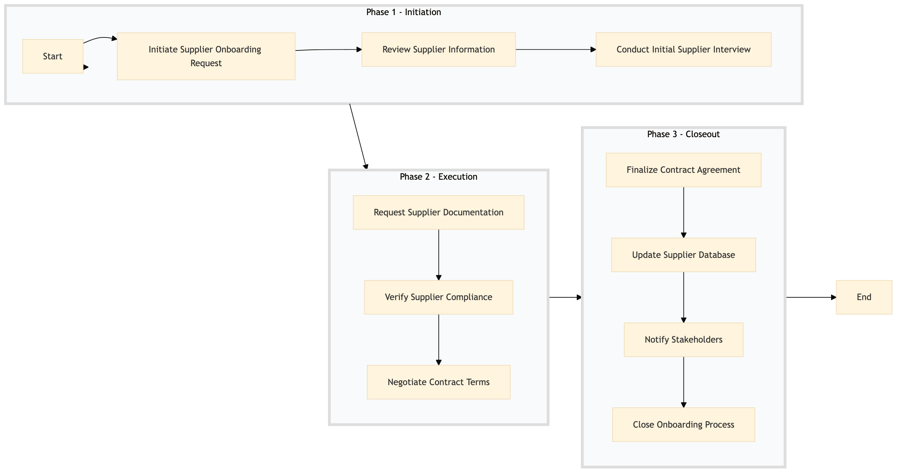

| Role | Steps |
|---|---|
| Procurement Manager | 1.1 1.3 2.3 3.1 3.3 3.4 |
| Procurement Analyst | 1.2 2.1 2.2 3.2 |
| Compliance Officer | 2.2 |
| Legal Counsel | 3.1 |
| Step | Name | Role | System | Input | Output | KPI | Dec? | Exc? | Pain Point / Risk |
|---|---|---|---|---|---|---|---|---|---|
| 1.1 | Initiate Supplier Onboarding Request | Procurement Manager | Birchstreet Procurement | Supplier Information Form | Onboarding Request in Birchstreet Procurement System | Less than 1 day to initiate request | N | N | Delays in initiating the onboarding process due to incomplete information. |
| 1.2 | Review Supplier Information | Procurement Analyst | Birchstreet Procurement, Oracle OPERA Cloud | Onboarding Request in Birchstreet Procurement System | Supplier Evaluation Report | Less than 3 days to review information | Y | N | Inconsistent data quality across different systems. |
| 1.3 | Conduct Initial Supplier Interview | Procurement Manager | Microsoft Teams, Zoom | Supplier Evaluation Report | Interview Transcript | Less than 2 hours for the interview | Y | N | Difficulty scheduling interviews due to time zone differences. |
| 2.1 | Request Supplier Documentation | Procurement Analyst | Birchstreet Procurement, Email | Interview Transcript | Supplier Documentation | Less than 5 days to receive documentation | Y | N | Non-compliance with requested documentation. |
| 2.2 | Verify Supplier Compliance | Compliance Officer | Oracle OPERA Cloud, SAP S/4HANA | Supplier Documentation | Compliance Report | Less than 3 days to verify compliance | Y | N | Complexity in verifying compliance with Marriott's policies. |
| 2.3 | Negotiate Contract Terms | Procurement Manager | Birchstreet Procurement, Email | Compliance Report | Drafted Contract Agreement | Less than 1 week to negotiate terms | Y | N | Difficulties in reaching agreement on contract terms. |
| 3.1 | Finalize Contract Agreement | Legal Counsel | Birchstreet Procurement, Microsoft Word | Drafted Contract Agreement | Signed Contract Agreement | Less than 2 weeks to finalize agreement | Y | N | Legal review delays due to complex contract language. |
| 3.2 | Update Supplier Database | Procurement Analyst | Birchstreet Procurement, Oracle OPERA Cloud | Signed Contract Agreement | Updated Supplier Database Entry | Less than 1 day to update database | N | N | Data entry errors leading to incorrect supplier information. |
| 3.3 | Notify Stakeholders | Procurement Manager | Microsoft Teams, Email | Updated Supplier Database Entry | Notification of New Supplier | Less than 1 day to notify stakeholders | N | N | Communication delays with internal teams. |
| 3.4 | Close Onboarding Process | Procurement Manager | Birchstreet Procurement, Oracle OPERA Cloud | Notification of New Supplier | Closed Onboarding Case | Less than 1 day to close case | N | N | Incomplete documentation leading to re-opening of cases. |
The process of onboarding and qualifying suppliers to ensure they meet Marriott International's standards for quality, reliability, and cost-effectiveness in a full-service hotel.